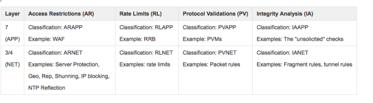

Show search and navigation tools
Every 60 seconds the CMS creates a report that summarizes rate of packet blocking in the system for each of the overall classifications for security rules on the Defense appliances. There are several hundred security rules that may be protecting a specific network, and these rules are categorized into 8 categories so that the block rate per classification can be calculated. These classifications are provided below.

The following is an example how this report is sent to configured syslog receivers and a description of the contents.
Mar 16 11:00:58 10.20.29.52 Mar 16 11:04:46 corpit-cms.corero.com cat=security,v=1,cl=all,pg=all, type=block-rate,arbr=800343,narbr=600450,aarbr=0,nrlbr=0,arlbr=0,npvbr=40003,apvbr=0,niabr=0, aiabr=0,
Example Block Rate Message
The specific content for the block rate message is:
|
Field Name |
Short Name |
Specific Value / Type |
Description |
|
Category |
cat |
security |
Security event category |
|
Type |
type |
block-rate |
Block rate statistics per rule classification |
|
Version |
v |
Number |
The Corero message format version |
|
Cluster |
cl |
Text |
The cluster of the protection group |
|
Protection Group |
pg |
Text |
The protection group of these statistics |
|
all-rules-block-rate |
arbr |
Rate |
The total rate of packet blocking for all rules in the system |
|
network-access-restriction-block-rate |
narbr |
Rate |
The rate of packet blocking for rules of the ARNET classification |
|
application-access-restriction-block-rate |
aarbr |
Rate |
The rate of packet blocking for rules of the ARAPP classification |
|
network-rate-limit-block-rate |
nrlbr |
Rate |
The rate of packet blocking for rules of the RLNET classification |
|
application-rate-limit-block-rate |
arlbr |
Rate |
The rate of packet blocking for rules of the RLAPP classification |
|
network-protocol-validation-block-rate |
npvbr |
Rate |
The rate of packet blocking for rules of the PVNET classification |
|
application-protocol-validation-block-rate |
apvbr |
Rate |
The rate of packet blocking for rules of the PVAPP classification |
|
network-integrity-analysis-block-rate |
niabr |
Rate |
The rate of packet blocking for rules of the IANET classification |
|
application-integrity-analysis-block-rate |
aiabr |
Rate |
The rate of packet blocking for rules of the IAAPP classification |